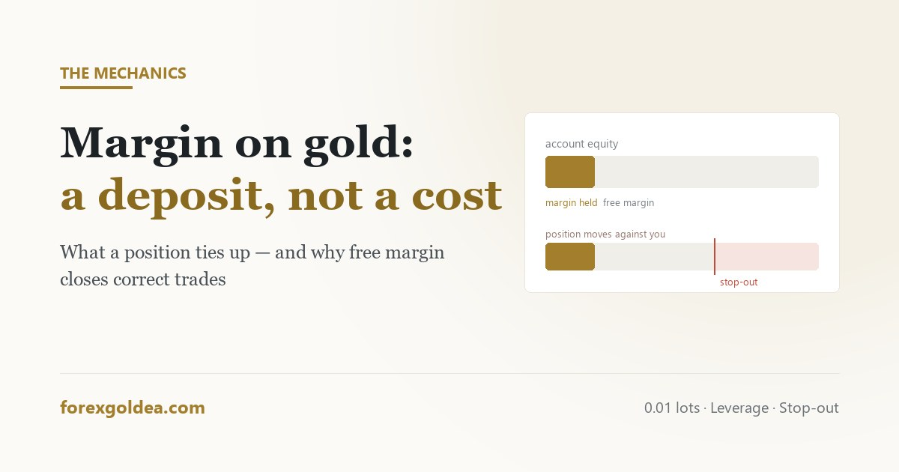

Margin on gold: what a position actually ties up

Margin is the most misunderstood number on a trading platform, mostly because it looks like a cost and behaves like a deposit. Get it wrong on gold — where one minimum-size position already controls an ounce of metal — and the account can be closed out of a trade that was perfectly correct, simply because there was nothing left to hold it with.
In short margin is not a fee. It is a portion of your balance the broker ring-fences while a position is open, and returns in full when you close it. On XAU/USD one standard lot is 100 ounces, so 0.01 lots is one ounce. With gold near $2,400, that position controls roughly $24 of metal — at 1:100 leverage the margin is about $24, at 1:500 about $4.80. Margin is rarely what limits a small account. Free margin is: as a losing position grows, free margin falls, and when the margin level drops far enough the broker closes the trade for you regardless of whether you were right.
What margin is, and what it is not
When you open a position, the broker sets aside part of your balance as security. That amount is the margin. It is not deducted, not spent, and not a charge — it is unavailable while the trade is open and released the moment it closes.
The confusion comes from where it appears. The platform shows Balance, Equity, Margin and Free Margin in one row, so margin sits alongside numbers that genuinely move up and down with profit and loss. It does not behave like them. Think of it as a deposit held against a rental rather than the rent itself.
What it does do is reduce the room you have left. That is the part worth understanding, and it is where accounts actually get into trouble.
The arithmetic on a 0.01 lot
Gold's contract size is the number to start from. One standard lot of XAU/USD is 100 ounces. The minimum size most brokers allow, 0.01 lots, is therefore one ounce.
The formula is unglamorous:
With gold at roughly $2,400, a 0.01-lot position controls about $24 of metal. What the broker sets aside depends entirely on your account leverage:
| Leverage | Margin for 0.01 lots | Margin for 0.10 lots | Margin for 1.00 lot |
|---|---|---|---|
| 1:50 | ~$48 | ~$480 | ~$4,800 |
| 1:100 | ~$24 | ~$240 | ~$2,400 |
| 1:200 | ~$12 | ~$120 | ~$1,200 |
| 1:500 | ~$4.80 | ~$48 | ~$480 |
Figures move with the gold price — they are illustrative at $2,400, not fixed. Some brokers also apply a separate, fixed margin rate to metals rather than your account leverage, so the specification for the symbol is the authority, not the account setting. Check it in Market Watch before assuming.
The immediate observation: at 1:500, margin on a minimum position is under five dollars. On almost any funded account, margin is not the thing stopping you from opening the trade. The position size calculation and the value of each dollar of movement matter far more.
Leverage changes the deposit, not the danger
Here is where the industry's marketing has done real damage. Higher leverage is sold as though it increases what you can make. What it actually changes is how much of your balance is ring-fenced.
Compare the same trade at two leverage settings. One ounce of gold, a $6 stop. At 1:100 the margin is $24; at 1:500 it is $4.80. In both cases, if the stop is hit, the loss is $6. Identical. Leverage moved the deposit, not the outcome.
What high leverage does is remove a natural brake. At 1:50, a small account simply cannot open a reckless position — there is not enough margin. At 1:500 the same account can open something ten times larger, and nothing on the screen objects. The risk was always in the position size; leverage just stopped preventing it. We took this apart in more detail in the guide to leverage on gold.
Free margin, and the number that closes your trade
This is the mechanism that actually removes people from correct trades.
- Equity = balance plus or minus the floating profit and loss on open positions.
- Free margin = equity minus the margin currently held.
- Margin level = (equity ÷ used margin) × 100, shown as a percentage.
As a position moves against you, equity falls while used margin stays where it is. The margin level therefore drops. Cross the broker's margin call threshold — often around 100% — and you can no longer open anything new. Keep falling to the stop-out level, commonly 50%, and the broker begins closing positions itself, largest loss first.
Why small accounts get stopped out on correct trades
Put the pieces together and the failure is predictable rather than unlucky.
A $200 account at 1:500 can open 0.10 lots — margin about $48, comfortably affordable. But at 0.10 lots, every $1 of gold movement is $10 of profit or loss. Gold routinely travels $20–$30 in a day. A perfectly ordinary retracement of $15 is $150 against a $200 balance, equity drops to $50, the margin level collapses and the broker closes the position.
Nothing was wrong with the direction. The position was simply too large for the account to sit through normal movement. This is the same conclusion the deposit guide reaches from the other direction: a balance buys the room to be wrong for a while, and margin is the mechanism that takes that room away.
Sizing so margin never becomes the constraint
- Size from the stop, not from available margin. Decide where the idea is invalidated, then choose a lot size where that distance costs an acceptable amount. Margin should be an afterthought — if it is not, the position is too big.
- Keep used margin small relative to equity. As a working guide, if open positions are using more than about 10–15% of equity as margin, a normal move can put the account under pressure.
- Watch margin level, not free margin. The percentage is what triggers the broker's action, and it is the number to glance at before adding a second position.
- Remember gold's range. A stop distance that feels generous on a currency pair is often tight on XAU/USD. Where the stop belongs is decided by the chart; the account then decides the size.
Done in that order, margin becomes what it should be: a number you check occasionally and never think about again.
Reader questions
How much margin do I need for 0.01 lots of gold?
About $24 at 1:100 or $4.80 at 1:500, with gold near $2,400. Check the symbol specification, as metals often have their own rate.
Is margin a fee I pay to the broker?
No — it is held as security and returned when the trade closes. Your real costs are spread, commission and swap.
Does higher leverage mean more risk on gold?
Not by itself. It changes the margin held, not the loss per trade — but it removes the brake on oversized positions.
What is the margin level and when does the broker close my trade?
Equity ÷ used margin, as a percentage. Margin call near 100%, and the broker force-closes at stop-out, often 50%.
Why was my gold position closed even though I was right?
Free margin ran out during a normal retracement. The direction was fine; the position was too large to sit through it.
How much of my account should be used as margin?
Under roughly 10-15% of equity. If margin limits your size instead of your stop distance, the position is too big.
Where this leaves you
Margin is a deposit, not a cost, and on gold it is almost never the thing preventing a trade. Free margin is — because a position sized without regard for gold's ordinary range will exhaust it during a retracement that means nothing. Decide the stop first, size so that distance is affordable, and margin quietly stops being a number you have to think about.
Affiliate disclosure: we earn a commission when you open and fund an account through our partner links, at no extra cost to you.